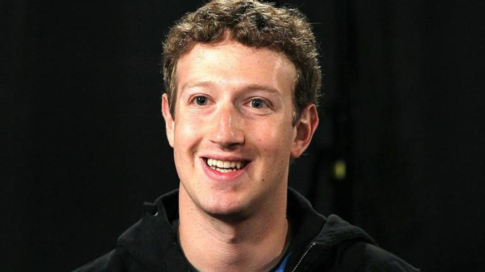

World's Youngest Billionaire
The CEO of Facebook
Mark Zukerberg
Mark Elliot Zuckerberg (born May 14, 1984) is an American internet entrepreneur and philanthropist. He is known for co-founding Facebook, Inc. and serves as its chairman, chief executive officer, and controlling shareholder.[3][4] He also co-founded and is a board member of the solar sail spacecraft development project Breakthrough Starshot.
Born in White Plains, New York, Zuckerberg attended Harvard University, where he launched the Facebook social networking service from his dormitory room on February 4, 2004, with college roommates Eduardo Saverin, Andrew McCollum, Dustin Moskovitz, and Chris Hughes.[6] Originally launched to select college campuses, the site expanded rapidly and eventually beyond colleges, reaching one billion users by 2012. Zuckerberg took the company public in May 2012 with majority shares. His net worth is estimated to be nearly $54 billion as of March 2020.[7] In 2007, at age 23, he became the world's youngest self-made billionaire. As of 2019, he is the only person under 50 in the Forbes ten richest people list, and the only one under 40 in the Top 20 Billionaires list.
Since 2010, Time magazine has named Zuckerberg among the 100 wealthiest and most influential people in the world as a part of its Person of the Year award. In December 2016, Zuckerberg was ranked 10th on Forbes list of The World's Most Powerful People.
Zuckerberg was born on May 14, 1984, in White Plains, New York.[13] His parents are Karen (née Kempner), a psychiatrist, and Edward Zuckerberg, a dentist.[14] He and his three sisters, Randi, Donna and Arielle, were brought up in Dobbs Ferry, New York, a small Westchester County village about 21 miles north of Midtown Manhattan.[15] Zuckerberg was raised in a Reform Jewish household,[16][better source needed] and his ancestors hailed from Germany, Austria and Poland.[17] He had a Star Wars-themed bar mitzvah when he turned 13.
At Ardsley High School, Zuckerberg excelled in classes. After two years, he transferred to the private school Phillips Exeter Academy, where he won prizes in mathematics, astronomy, physics, and classical studies. In his youth, he also attended the Johns Hopkins Center for Talented Youth summer camp. On his college application, Zuckerberg stated that he could read and write French, Hebrew, Latin, and ancient Greek. He was captain of the fencing team.
People also search about:
Facebook is one of the most popular social media used in the world.
Youtube is a video sharing app for both phone and computer owned by Google.
Instagram is one of the most used social media app.
It is a image app having doggy filter.
It is a social media app where people can tweet their thoughts.